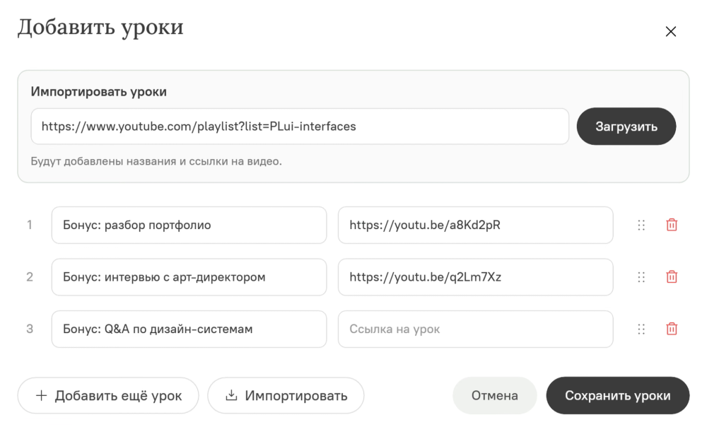
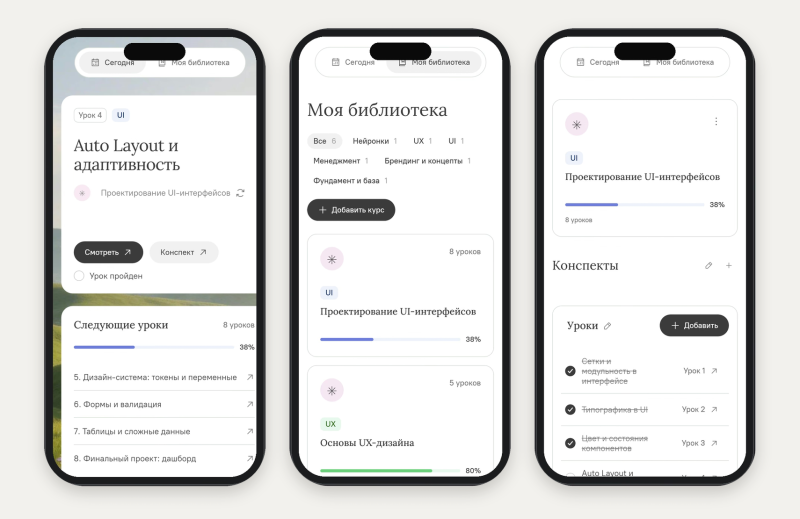

Studyspace
Личный планер, который собирает курсы в одну библиотеку и показывает, какой урок смотреть дальше.
Курсы хранятся в разных местах. Продолжить урок хочется сразу.
Я сделала планер для своего обучения. В нём собрала видео, ссылки и конспекты, добавила прогресс и очередь. Главный сценарий начинается с вопроса «что смотреть сегодня?»
Очередь помогает продолжить с того места, где остановилась.
На главной виден текущий урок. Отсюда можно открыть видео, перейти к конспекту или отметить урок пройденным. Рядом видны следующие уроки и прогресс по курсу.
У каждого курса видны направление, уроки и прогресс.
В библиотеке можно отфильтровать курсы по темам. У каждого направления свой цвет для тега и прогресса. На странице курса собраны уроки и ссылки на конспекты, чтобы к ним можно было вернуться из этого же места.


Курс можно добавить по ссылке на плейлист.
Планер подтягивает названия и ссылки уроков. Список можно дополнить вручную, отредактировать и переставить уроки.


Учебные материалы собраны в одном личном рабочем пространстве.
Я спроектировала и собрала Studyspace для себя. Вход по email и права доступа к данным в Supabase поддерживают личный формат продукта.